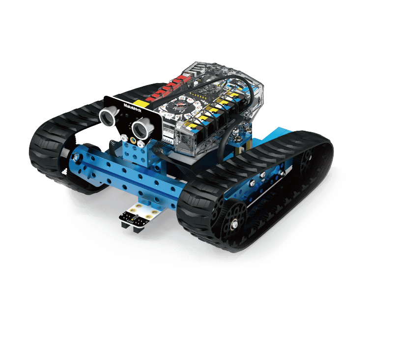

Préparation de la vue 3D…
Glisser pour explorer
Séance 1 · 2 heures
Suivre le fil du projet.
Comprendre le robot. Programmer un premier suivi de ligne.
01Le projet & le groupeAccueil et présentation25 min
Le défi
Un robot suiveur de ligne adapte sa trajectoire grâce à des capteurs qui repèrent un tracé au sol.
Programmer un robot capable de suivre une ligne, puis améliorer sa vitesse et sa fiabilité.
Un exemple industriel
Un chariot de transport automatique suit un tracé au sol pour déplacer des pièces dans une usine.
Notre groupe
- Nom
- JSP Robot
- Effectif
- 4 élèves · Voir l’équipe ↗
- Chef de projet
- À désigner par le groupe
- Robots disponibles
- Date à confirmer avec l’enseignante
Le planning : S1 à S18
| Période | Séances | Contenu proposé |
|---|---|---|
| Préparation | S1–S2 | Comprendre le défi, former le groupe, simuler. |
| Appropriation technique | S3–S7 | Assembler, découvrir les capteurs, programmer et tester. |
| Optimisation | S8–S14 | Ajuster vitesse, trajectoire et recherche de ligne. |
| Compétition et bilan | S15–S18 | Comparer les essais et présenter le bilan. |
Le contenu détaillé reste à valider avec le cahier des charges, qui n’apparaît pas sur les photos.
Objectif & matériel de la séance
Objectif : comprendre le projet et découvrir l’environnement de programmation.
Matériel : poste informatique, fiche technique du mBot Ranger et accès à mBlock 5. Le déroulement suit les quatre phases de 25, 35, 50 et 10 minutes, soit 120 minutes.
02Découvrir le robotmBot Ranger · référence 9009235 min
DétecterCapteur infrarouge
TraiterMe Auriga + programme
AgirMoteurs
La fiche d’identité
- Nom
- mBot Ranger
- Référence
- 90092
- Carte de contrôle
- Me Auriga
- Microcontrôleur
- ATmega2560 · 16 MHz
- Alimentation
- 6 piles AA, non fournies, ou batterie compatible
- Connectivité
- USB, Bluetooth et 10 ports RJ25
- Poids du montage
- À peser avec son alimentation
- Dimensions du montage
- À mesurer selon la configuration choisie
Les dimensions de la carte Auriga sont 100 × 65 × 20 mm. Elles ne sont pas celles du robot assemblé.
Les six types de capteurs
| Capteur | Rôle |
|---|---|
| Suiveur de ligne | Deux détecteurs infrarouges distinguent le noir et le blanc. |
| Ultrason | Mesurer la distance d’un obstacle. |
| Gyroscope | Mesurer la rotation ; aider au maintien de l’équilibre. |
| Luminosité | Détecter la lumière ambiante avec deux capteurs. |
| Son | Détecter l’intensité sonore. |
| Température | Mesurer la température ambiante. |
Les actionneurs
| Actionneur | Rôle |
|---|---|
| Moteurs CC | Transformer l’énergie électrique en mouvement. |
| Buzzer | Émettre un signal sonore. |
| LED RGB | Signaler un état par une couleur ; anneau de 12 LED. |
Les trois configurations & le choix proposé
| Configuration | Description | Atout |
|---|---|---|
| Off-Road Land Raider | Robot à chenilles. | Adhérence et franchissement. |
| Dashing Raptor | Véhicule à roues. | Déplacements rapides sur sol plat. |
| Self-Balance Nervous Bird | Robot à deux roues en équilibre. | Travail de l’équilibrage avec le gyroscope. |
Pour un suivi de ligne rapide sur piste plane : Dashing Raptor. Ses roues limitent les frottements liés aux chenilles, et il n’a pas à gérer l’équilibre du Nervous Bird. C’est un choix proposé, à vérifier par des essais.
Observer avant de programmer
Sur les démonstrations et sur le montage, repérer le capteur de ligne, la carte qui prend la décision et les moteurs qui corrigent la trajectoire.
03Programmer avec mBlock 5Deux capteurs · le sprite suit la piste50 min
Le programme utilise deux petits repères de couleur sur le sprite : rouge à gauche et vert à droite. À chaque pas, il vérifie quel repère touche la ligne noire et corrige le cap. Le même principe prépare le suivi de ligne du robot réel, mais le fichier ci-dessous commande uniquement le sprite de la scène mBlock 5.
Essai : suivre la ligne noire jusqu’à faire le tour
Gauche : noir · Droite : noir
Les repères rouge et vert représentent les détecteurs. Cliquez sur « Tester » pour voir plusieurs tours, ou « Un pas » pour comprendre chaque décision.
Quand le drapeau vert est cliqué
Répéter indéfiniment
Si les deux capteurs voient le noir
Avancer de 2 pas
Sinon si le capteur gauche voit le noir
Tourner de 3° à gauche · avancer
Sinon si le capteur droit voit le noir
Tourner de 3° à droite · avancer
Sinon
Chercher dans le dernier sens · avancer de 1 pas
Comment ouvrir et tester le vrai fichier mBlock 5 ?
- Ouvrir mBlock 5, choisir Sprites / Personnages, puis Fichier → Ouvrir depuis votre ordinateur.
- Importer
S1_suivi_ligne_JSPRobot.mblocket sélectionner le sprite JSP. - Cliquer sur le drapeau vert. Le sprite doit parcourir la piste noire en tournant à gauche et à droite selon ses deux repères.
- Observer les deux couleurs dans le costume du sprite ; ne pas les recolorer, car le programme les utilise comme capteurs.
- Ajuster la vitesse et les corrections après un essai. Revenir aux valeurs 2 pas et 3° si le sprite perd la piste.
Important : ce projet mBlock est un exercice de scène avec capteurs de couleur virtuels, pas un programme à téléverser sur la carte Me Auriga. Pour piloter le mBot Ranger physique, il faudra utiliser les blocs du capteur infrarouge Me Line Follower et les moteurs, selon les ports réellement branchés.
04Bilan & prochaine séanceQuatre situations, une décision10 min
Détecter la ligne : capteur infrarouge.
Prendre une décision : si… alors… sinon.
Répéter une action : répéter indéfiniment.
Le devoir pour la séance 2
Choisir une situation pour comprendre la correction. Les deux points représentent les capteurs, sur une ligne noire et un fond blanc.
Les deux capteurs détectent la ligne : avancer tout droit.
L’algorithme complet, en français
- Au départ, mémoriser une direction de recherche : gauche par défaut.
- Répéter indéfiniment la lecture des deux capteurs.
- Si les deux détectent la ligne : avancer tout droit.
- Si seul le capteur gauche détecte la ligne : corriger à gauche et mémoriser ce côté.
- Si seul le capteur droit détecte la ligne : corriger à droite et mémoriser ce côté.
- Si aucun ne la détecte : chercher lentement dans la dernière direction connue. Si la perte dure 2 secondes, arrêter les moteurs et repositionner le robot.
Pour tourner à gauche, ralentir le moteur gauche par rapport au droit ; faire l’inverse pour tourner à droite. Les vitesses et la durée de recherche restent à ajuster par essais.
Télécharger l’algorithme ↓Sources du dossier
Consignes : les cinq pages imprimées de la séance 1 fournies par le groupe. Les annotations manuscrites d’une autre équipe ne sont pas reprises.